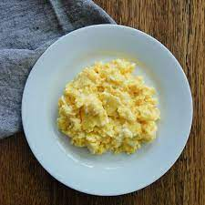

Scrambled Eggs Recipe

This is a recipe for simple scrambled eggs. Done in 2 minutes! And very tasty.
Ingredients:
- 3 Eggs
- 1/2 cup Milk
- 1 tbsp butter
- 1 tbsp hot sauce TM
Steps:
- Whisk together 3 eggs and milk until smooth.
- Heat butter in frying pan and then add egg mixturi
- Cook Scrambled eggs until fluffy
- Add hot sauce to taste.